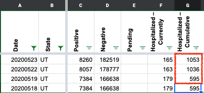
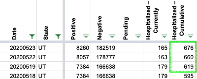
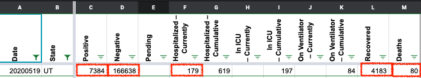
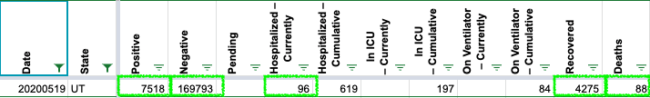

[UT Historical] Repair data for May 19, 22, 23
Issue number 450
jedludlow opened this issue on May 24, 2020 at 12:42 pm
The state of Utah had an outage on May 19 which caused that day’s data to be a duplicate of May 18.
Hospitalization data for May 22 and 23 was incorrect with respect to totals on the state’s site as retrieved around 11:30 am on May 23 and May 24, respectively.
This pull request documents the required repairs. I realize that directly incorporating the pull request into covid-tracking-data may not be the best repair strategy, but it served as a convenient way to convey the required changes and allowed me to continue plotting without strange aberrations.
https://github.com/COVID19Tracking/covid-tracking-data/pull/73
Comments
Hi Jed, thank you for your input and for sharing the KSL News Story. We’ve reviewed the historical screenshots from 5/18, 5/19, 5/22 and 5/23 for Utah. The cumulative hospitalization data will be updated in our next publish. We are still reviewing the remaining changes you’ve mentioned for 5/19.
BEFORE: 
AFTER: 
Thank you, Camille
For the remaining changes for 5/19, data will be updated in our next publish for positive cases, negative cases, hospitalized (currently), hospitalized (cumulative), recovered and deaths.
BEFORE: 
AFTER: 
For simplicity, here are the minimal required repairs spelled out for the days in question ignoring the deprecated data fields.
2020-05-19
There was an outage on the state’s data website for this day, causing it to be a duplicate of May 18. The correct data was posted later in the evening and can be obtained from a KSL News story from that day:
positive: 7518negative: 16793hospitalizedCumulative: 619death: 882020-05-22
Cumulative hospitalization data for May 22 is incorrect. The historical screenshot shows that this should read 660 instead of 1036.
2020-05-23
Cumulative hospitalization data for May 23 is incorrect. The historical screenshot shows that this should read 676 instead of 1053.